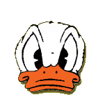

|  |
|
Tjofljöt! Hederlige John här, det är jag som är øhlchefen i EKAK, och för de som inte orkar kalla mig vid mitt fulla namn fungerar John ypperligt. Ni vet alla att øhl är livets vatten, och att vi inte skulle klara oss utan dess fina, lena, karakterisktiska smak. Eftersom det är jag som tillför B-vitamin till föreningen är det även jag som har den viktigaste och enda betydelsefulla posten i EKAK, de andra är i konstant behov av min nektar. Förutom øhl fixar jag även maten till gänget. Hederlige John, eller John Worthington Foulfellow som han egentligen heter, är den lurige räven in filmen Pinocchio (1940). Han lurar Pinocchio till en ö, där han nästan blir förvandlad till en åsna. Johns högra hand heter Gideon, och det är en flummig liten katt. |
|
|